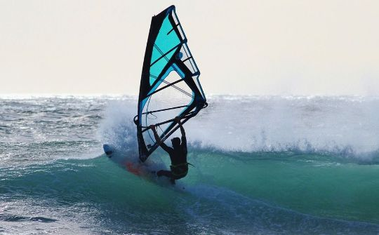

Praia do Rosa es única. Un pedazo de paraíso entre la Serra do Mar y el Océano Atlántico,
Rosa es un lugar rústico, con una naturaleza viva y un estilo verdaderamente único.
Postal del municipio de Imbituba, Rosa está a sólo 90 km de la capital Florianópolis,
y está rodeada de otras bellezas naturales como la vecina Barra de Ibiraquera, Guarda
do Embaú que está a 35 km al norte y la histórica ciudad de Laguna que está a 40 km al sur.
Praia do Rosa está concurrida todo el año, pero el mayor flujo de turistas se produce en la
temporada de verano, considerada temporada alta. En otoño, la luz es mágica, los colores
de la naturaleza se vuelven más bellos, la temperatura es muy agradable tanto en el mar
como en el exterior. En invierno hay eventos gastronómicos promovidos por los mejores
restaurantes de Rosa, como Del Vino, normalmente en agosto, y Sabores do Mundo. Es en
julio cuando comienzan a llegar las ballenas francas y se inicia el turismo de avistamiento
de ballenas en Praia do Rosa. El otoño es la mejor época para surfear pero para los que les
gusta el deporte... hay olas todo el año.
Descubierta en los años 70 por hippies y surfistas, hoy es conocida internacionalmente.
El prestigioso periódico inglés The Guardian lo consideró uno de los “7 paraísos escondidos
del mundo”. Praia do Rosa forma parte del selecto Club de las Treinta Bahías Más Bellas del
Mundo, avalado por la UNESCO y es considerada una de las “diez bahías más bellas de Brasil”.
¡Estos títulos no podrían ser más justos! Con forma de media luna, son aproximadamente 7
kilómetros de playa bañada por uno de los mares más bellos de Santa Catarina, con dunas,
senderos, cerros y exuberantes lagunas que atraen a turistas de todas las nacionalidades.
La infraestructura turística es envidiable. Hay alojamiento para todos los gustos. Desde
posadas de lujo hasta hostales, que enfatizan la cultura local, o que tienen el deporte o
el misticismo como señas de identidad. También es destacable su excelente y variada gastronomía,
que es un motivo más para que los visitantes quieran volver. Eventos románticos, vida nocturna,
deportes y mucha naturaleza hacen de Praia do Rosa un lugar agradable para parejas, familias y solteros.
Actualizado Noviembre 2024
 |
 |
||
Pedra Da Vigía |
Sushi Lounge |
Refugio de Pescadores |
Sapore di Pasta |
| En este acogedor espacio dirigido por Regina Pedreira, que cuenta con 20 años de tradicion, los comensales podran degustar la cocina francesa con sutiles toques de modernidad. |
Segun la antigua cultura japonesa, "Goen" significa "buena suerte; destino y buenas relaciones en el trabajo, la familia, la amistad y el amor." |
"Diversidad" es la palabra para Refugio de Pescadores. Sabores diversos inspirados en la cocina mediterranea, con sus ingredientes frescos, hierbas y aceites de oliva virgen extra, una ligera cocina y saludable. |
Restaurente italiano del mismo nombre, ubicado en un ambiente decorado con lamparas, mesas, sillas y sillones de diseñadores famosos como la estadounidense Florence Knoll. |

Ubicada en medio de la exuberante naturaleza de Praia do Rosa, la posada ofrece una experiencia
única de confort y tranquilidad. Ideal para parejas, familias y grupos de amigos que buscan
relajarse en un alojamiento acogedor y sumergirse en la belleza natural que nos rodea.
De estilo rústico, rodeado de mucha vegetación y tranquilidad, se encuentra a 900 metros de
la playa y a 200 metros del pequeño y encantador centro, que es el corazón de Praia do Rosa
con bares, restaurantes, mercados, tiendas y las mejores discotecas. en la región.
Son 11 alojamientos privados con capacidad para 2 a 8 personas con aire acondicionado, chimenea,
cocina y todas las comodidades, incluyendo ropa de cama y baño, desayuno buffet servido en la
zona gourmet, ¡un salón con barbacoa junto a la piscina!
Aquí encontrarás un servicio personalizado, aparcamiento privado gratuito y la opción de un jacuzzi
en la zona exterior. Una mezcla perfecta de encanto y practicidad.
Aloha Praia do Rosa es el destino ideal para quienes buscan momentos inolvidables.
Explora impresionantes playas, prueba la cocina local y disfruta de la hospitalidad
que nos hace únicos. Se pensó que cada detalle proporcionaría una estancia memorable.
Consulta la web para conocer nuestros hogares y emprender un viaje de serenidad y bienestar.
Actualizado Noviembre 2024
Registro: 14h Salida: 12h

Estamos ubicados en Praia do Rosa, conocida como una de las 30 bahías más bellas del mundo y destino
de verano de moda. La región se conoce como ROTA DA BALEIA FRANCA, insertada en el APA del
Área de Protección Ambiental de Ballenas BF (Franca), Brasil, por ser vivero natural de esta
especie de Cetáceos en el periodo de julio a octubre.
Haz tu reserva directa con PRECIOS PROMOCIONALES en nuestra web(www.rosasurf.com)
o a través de las plataformas de viajes hihostel, hostelworld, airbnb o reservas.
Todo el complejo está situado en una gran parcela con APARCAMIENTO GRATUITO y zona deportiva.
Somos una familia apasionada por viajar y conocer gente, por eso creamos el Complejo Surf Rosa
para recibir y ayudar a los viajeros durante su experiencia en Praia do Rosa y región.
Siéntete como en casa ya que consideramos a cada huésped un nuevo miembro de la familia.
Siempre que sea necesario cuente con nosotros para obtener información sobre las instalaciones
y sitios turísticos de la región y aproveche nuestras asociaciones.
¡Quédate con nosotros y compartiremos experiencias!
ROSA SURF HOSTEL: (@rosasurfhostel)
Nació con el concepto de compartir y convivencia. Su edificio construido en 2018 cuenta con
habitaciones compartidas con literas con camas individuales y dobles. Su estructura cuenta con
cocina, baños, salón, terraza y zona de ocio compartida, con a, que permiten la integración y
convivencia de los huéspedes. También cuenta con dos amplias terrazas separadas por una zona
gourmet con barbacoa, para fiestas, tomar el sol o simplemente relajarse!
El alojamiento en albergue se vuelve económico porque permite la preparación de comidas en
la cocina del albergue, sin necesidad de gastos de restaurante y permitiéndole seguir su dieta
alimentaria, siendo una excelente oportunidad para integrarse con otros huéspedes. Además, el
albergue comparte algunos condimentos necesarios para la preparación de alimentos, y, y es común
la división de los gastos de alimentación y transporte entre los huéspedes. Lee la descripción y
regístrate en nuestro grupo de viajes en whatsapp, para ofrecer o consultar viajes disponibles a Praia do Rosa.
ROSA SURF SUITES: (@rosasurfhostel)
Para aquellos que desean más privacidad, comodidad y confort, sin renunciar al ambiente relajado
y divertido de un albergue, construimos en 2021 un exclusivo edificio de suites. Hay 5 suites
(dorom y baño privado), con aire acondicionado, con capacidad para 4 personas.
CAMPING ROSA SURF (@rosasurfhostel)
Nuestra zona de camping cuenta con infraestructura con Cocina, Baños, Duchas en un espacio
con barbacoa y amplia mesa, permitiendo un ambiente de relax y contacto con la naturaleza,
con zona para lual alrededor de la fogata
Actualizado en noviembre 2024

Cocina completa con dos islas, pileta para lavar los utesilios y estufa. Ademas cuenta con heladera, Microondas, Horno eléctrico y todo lo que necesitas para cocinar.

Amplia habitación con capacidad para 8 a 10 personas. Dispone de unas literas con una cama de matrimonio abajo y una cama individual arriba. Ademas cuenta con aire acondicionado, literas con cajones individuales y WiFi.

Baños de vestuarios con duchas, lavabos y sanitarios. Cuenta con ducha eléctrica y espejo grande. .

En la última planta tenemos un espacio gourmet con barbacoa y dos terrazas disponible para nuestros residentes. Todo equipado para disfrutar y divertirse.

Un espacio para hacer fogatas durante el dia o la noche.

Es un albergue con encanto con sólo 10 suites que cuenta con todo el confort
y buena gastronomía para recibir parejas y familias, en cualquier época del año.
Hospedaria das Brisas está ubicada en “Caminho do Rei”, uno de los lugares más encantadores
y exclusivos de Praia do Rosa. Su distancia de la playa es de aproximadamente 400 metros.
También está muy cerca de los mejores restaurantes, bares y del Centrinho da Praia do Rosa.
La ubicación privilegiada suma la inversión constante en comodidad y el arte de recibir bien.
Además del cuidado del medio ambiente, el turismo sostenible es una de nuestras prioridades.
Las suites y apartamentos tienen vistas al mar o a la montaña, y están equipados para brindar comodidad y bienestar.
Para Hospedaria das Brisas hacer que tu estancia sea inolvidable es más que un compromiso, es un placer.
Actualizado en noviembre 2024

Si nunca has oído hablar de Praia do Rosa, ponte al día. The Guardian publicó una lista de las 10 mejores playas del mundo que son (o eran) desconocidas. ¿Adivina qué playa está en esta lista?

Contamos con unidades de 1, 2 o 3 recámaras, chalets con todo el confort para ti y tu familia.

El surf en Praia do Rosa es conocido por sus excelentes olas y su impresionante paisaje. Es necesario que conozcas los mejores lugares de la región para practicar este deporte.

Desde 1989 jugando y animando Padel con la mejor vista de Praia do Rosa, Fazenda Verde ahora cuenta con una cancha de cristal profesional modelo Pablo Lima de Griff Padel. Si te encantan los deportes, ¿qué tal un partido junto al mar?

Fazenda Verde cuenta ahora con un espacio fitness, el lugar donde la salud y el bienestar se encuentran en un ambiente inspirador. Ven y disfruta de un entrenamiento completo y tonificante mientras disfrutas de la tranquilidad y la belleza de Fazenda Verde
* Debe programarse en recepción.
|  | ||
Equitacion |
Avistaje de Ballenas |
Windsurf Y Kitesurf |
| Una forma de ocio muy popular en Praia do Rosa es montar a caballo por las playas y senderos. Hay paseos a caballo más cortos para contemplar la vista panorámica del lugar, y otros más largos que develan los antiguos caminos de carretas de bueyes y las laderas de los cerros de las localidades de Encantada y Ressacada. |
De julio a noviembre es la temporada de avistamiento de ballenas en Praia do Rosa. Las ballenas francas suelen alejarse de la Antártida y acercarse a la costa de Santa Catarina para dar a luz y amamantar a sus crías, y Praia do Rosa es conocida como el Vivero de Ballenas Francas. Estos maravillosos gigantes de los mares se ven fácilmente en toda la playa, desde las orillas de Rosa Sul y Rosa Norte. Empresas especializadas ofrecen tours durante la temporada de ballenas francas, disfruta. | Barra da Lagoa de Ibiraquera, a 3 km de Praia do Rosa, es una de las mejores calles del mundo para la práctica de kitesurf wave y windsurf wave, y cuenta con una completa estructura de apoyo para los practicantes de estas dos modalidades. Para aquellos que solo quieren divertirse, sin arriesgar las olas de la barra, la Laguna Ibiraquera en sí misma es una atracción irresistible, ya que su régimen de vientos regulares y poca profundidad garantizan más seguridad sin perder la emoción. |
| El valor por persona U$50 | Embarcacion por persona U$120 | Alquiler de equipo mas guia U$150 |
 |
||
Senderos Ecologicos |
Ibiraquera Bar |
Surf |
| Caminar por los senderos ecológicos de Praia do Rosa es otra excelente alternativa de ocio. Entre las opciones más populares se encuentran el Sendero del Camino del Rey, que recorre la carretera del mismo nombre, un bastión de posadas y buenos restaurantes, antes de descender por un sendero verde hasta las paradisíacas Praia do Luz y Barra de Ibiraquera. Otra maravillosa opción es el Sendero de Praia Vermelha, que une la esquina norte de Rosa con la playa que le da nombre, bordeando la costa en una sucesión de hermosas vistas. | Al sur de Praia do Rosa, se encuentra Barra de Ibiraquera, un paraíso para los windsurfistas y kitesurfistas debido a la calidad del viento. La Laguna Ibiraquera tiene una belleza única, un bastión de familias con niños, ya que son aguas tranquilas. Se puede llegar a la playa por el sendero que comienza en Rosa Sul o en coche. | El surf es el deporte más popular en Praia do Rosa. Revelado al mundo por los surfistas en los años 70, el lugar tiene características geográficas muy específicas, que permiten la formación de buenas olas con prácticamente cualquier viento. La playa también alberga escuelas de surf para aquellos que quieren iniciarse en el deporte y cuenta con varias tiendas y bares destinados a servir a la tribu surfera, que, como se dijo, representa una parte importante del movimiento turístico del lugar. |
| Tiene un valor por persona de U$20 y tiene una duracion de 2 horas |
El ingreso a la playa para pasar dia tiene un costo de U$40 |
Alquilar el equipo de Surf tiene un valor de U$80 |